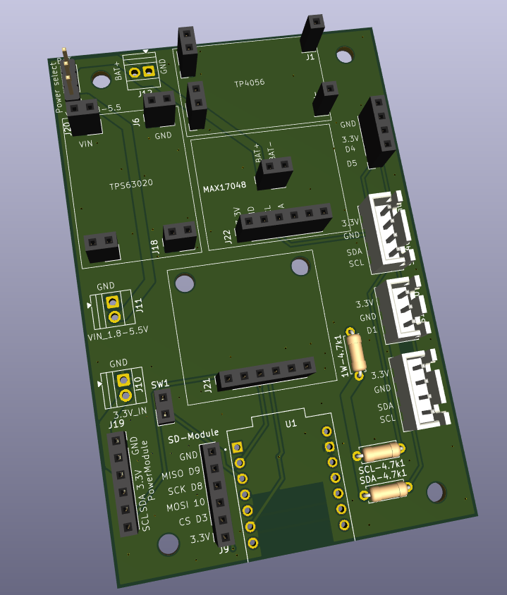
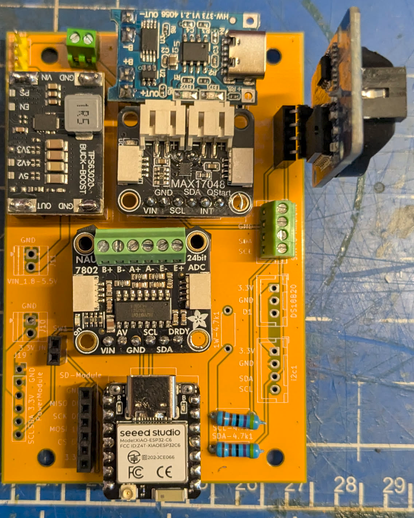

Everything you need to build a HiveHub for up to 16 hive scales: the full parts list with price estimates, the PCBs, wiring notes, firmware flashing with VS Code + PlatformIO, scale calibration and the self-hosted backend. Roughly €90–120 for a dual-scale build (plus load cells of your choice), a weekend of soldering-iron-free assembly, and no subscription — ever.
One board, off-the-shelf modules on pin headers, no SMD soldering.
The central PCB. It carries the XIAO ESP32-C6 and off-the-shelf modules on headers: NAU7802 load-cell ADC (2 scales), MAX17048 battery gauge, TPS63020 buck-boost, TP4056 USB-C charger, DS3231 RTC, micro-SD and SHT40.
Add the NAU7802 breakout PCB with its TCA9548A I2C multiplexer and up to 8× NAU7802 modules — 16 scales in total on one HiveHub. (When the mux is used, no NAU7802 is installed on the main PCB — see the wiring notes below.)
A LiPo or 18650 pack, a CN3791 MPPT solar charger and a 6 V panel keep a HiveHub running unattended; the MAX17048 reports the battery state with every measurement.
The guide below walks through the whole build in six steps. Prefer paper? Download every step as a nicely formatted PDF.
The bill of materials for one HiveHub. Prices are rough 2026 ballpark figures (AliExpress / Seeed, excl. shipping) — they fluctuate, so treat them as orientation, not a quote. AliExpress links are affiliate links and support the project.
| Component | Amount | Est. price | Note |
|---|---|---|---|
| Core electronics — ≈ €47 | |||
| Seeed Studio XIAO ESP32-C6 (3-pack) | 1 pack | ≈ €15 | One HiveHub uses one board (≈ €5 each); keep the spares for HiveInside sensors or the next hub. |
| External antenna for the XIAO ESP32-C6 | 1 | ≈ €3 | u.FL 2.4 GHz antenna — much better range from inside a plastic box. |
| NAU7802 load-cell ADC module | 1 (up to 8) | ≈ €3 | One module reads 2 scales. Dual-scale build: 1 on the main PCB. 3+ scales: up to 8 on the breakout PCB — and none on the main PCB. |
| TCA9548A I2C multiplexer | 0–1 | ≈ €2 | 0 for a dual-scale build, 1 for 3+ scales (installed on the NAU7802 breakout PCB). |
| TPS63020 buck-boost module | 1 | ≈ €3 | Battery or 5 V input → stable 3.3 V rail. |
| Micro-SD card slot module | 1 | ≈ €1.50 | Local cache and measurement backup. |
| Micro-SD card | 1 | ≈ €2 | 256 MB is fine. |
| SHT40 module | 1 | ≈ €2 | Ambient temperature & humidity. Wired modules usually carry 4.7 kΩ I2C pull-ups — see the pull-up note in step 3. |
| DS3231 RTC module | 1 | ≈ €2 | Timekeeping without NTP. Remove its 4.7 kΩ I2C pull-up resistors — see the pull-up note in step 3. |
| USB-C LiPo charger (TP4056) | 1 | ≈ €1.50 | Charges the battery over USB-C. |
| IP65 push button | 1 | ≈ €2 | Setup / provisioning button, mounted through the enclosure. |
| Aluminium U-profile 50×25×3 mm, 400–450 mm | 1 per scale | ≈ €10 | Scale frame — local metal shop or hardware store. |
| Headers & hardware — ≈ €17 | |||
| PCB standoffs M3 (set) | 1 set | ≈ €3 | |
| 2-pin female header | 8 | ≈ €2 | |
| 4-pin female header | 8 | ≈ €2 | |
| 6-pin female header | 3 | ≈ €1.50 | |
| 7-pin female header | 2 | ≈ €1.50 | You may use 6-pin headers for the XIAO ESP32-C6 and leave 5V and D0 unconnected. |
| 2-pin screw terminal | 1 | ≈ €0.50 | |
| 4-pin screw terminal | 1 | ≈ €0.50 | |
| 2.54 mm male pin header (1×3) | 1 | ≈ €1 | The power-source selection jumper. |
| Wire crimps for SHT40 + scale | 1 set | ≈ €3 | |
| Cable (sensor + load-cell wiring) | as needed | ≈ €5 | |
| Load cells — pick one option (2 per scale platform) | |||
| TAL203 | 2 | ≈ €10 | Cheap, works just fine. |
| Mavin NA2 | 2 | ≈ €30 | Best medium-range performance; dimensions identical to the Bosche H30A. |
| Bosche H30A | 2 | ≈ €90 | Best name-brand option. |
| Enclosure — pick one (150×150 to 200×200 mm, plastic; bigger = easier wiring) | |||
| Very nice box | 1 | ≈ €15 | |
| Standard box | 1 | ≈ €8 | |
| Battery — pick one option | |||
| Budget 10,000 mAh LiPo | 1 | ≈ €20 | |
| 18650 cells + holder | 2–4 + 1 | ≈ €14 | Two cheap 18650 in parallel give roughly 2–4 weeks of runtime. |
| Scale connectors — pick one option | |||
| SP13 5-pin connectors | 1 per scale | ≈ €2 each | Waterproof, pluggable — recommended. |
| PG7 cable glands (set) | 1 set | ≈ €5 | Budget alternative — but removing a single scale becomes a hassle when it cannot simply be unplugged. |
| Optional — off-grid & extras | |||
| CN3791 MPPT solar charger, 6 V | 1 | ≈ €4 | Needed to charge the LiPo from a solar panel. |
| Solar panel 6 V / 4.5 W | 1 | ≈ €8 | |
| MAX17048 fuel gauge | 1 | ≈ €2 | Battery voltage / state-of-charge with every measurement; module carries 10 kΩ I2C pull-ups. |
| USB-C passthrough with cover | 1 | ≈ €4 | External charging port in the enclosure wall, in case solar fails. |
| Internal USB-C cable (20 cm, flat) | 1 | ≈ €2 | Connects the passthrough to the TP4056. |
| HolyIot 25015 in-hive BLE sensor | 1 per hive | ≈ €10 | HiveInside and HiveHeart provide more data, but the 25015 is a cheap, ready-to-use (add casing) in-hive sensor. |
Ready-to-upload fabrication files (Gerbers + drill, zipped) are included in the repository for every board. Upload the zip at any PCB fab (JLCPCB, PCBWay, Aisler, …), keep the default settings, and order — 5 boards cost around €5 plus shipping.
The central board — carries the XIAO ESP32-C6 and every module from the BOM on pin headers.
The 16-scale expander: TCA9548A mux + up to 8× NAU7802. Only needed for more than 2 scales; connects to the Scale Module's I2C expansion header.
KiCad projects and fabrication/ outputs for every board, plus
assembly notes.
With the Scale Module PCB the wiring is mostly done for you: solder the female headers onto the board, plug the modules in, connect load cells and battery to the screw terminals — done. That is why there is no full hand-wiring diagram: the PCB is the wiring diagram. The collapsed pin list at the bottom covers the rare fully-hand-wired build.


The 1×3 pin header on the Scale Module selects the power source. Set the jumper to the top position when powered from a battery (through the TPS63020 buck-boost) and to the bottom position when powered from a 5 V power supply. Never bridge all three pins.
The NAU7802 has a fixed I2C address, so two of them can never share one bus. Dual-scale build: one NAU7802 on the main PCB, no mux. 3–16 scales: all NAU7802 modules (up to 8) go on the NAU7802 breakout PCB behind its TCA9548A mux — and no NAU7802 may be installed on the main PCB, or every read would collide with the muxed chips.
Most I2C modules ship with their own pull-up resistors, and they add up in parallel: NAU7802, MAX17048 and mux modules generally carry 10 kΩ pull-ups, while RTC modules and wired SHT40 breakouts often carry 4.7 kΩ. Too many in parallel pull the bus so hard that the lines can no longer be driven low reliably — the bus "browns out" and devices drop off. Remove the 4.7 kΩ resistors from the RTC module and do not populate additional pull-ups on the PCB. The remaining module pull-ups are plenty.
Bolt two load cells per platform onto the aluminium U-profile and wire them to the NAU7802 screw terminals (E+, E−, A+, A−). Route the DS18B20 probe and the SP13 scale connectors through the enclosure wall, mount the SHT40 outside the box (shielded from rain and sun), install the IP65 button, and insert the RTC coin cell before closing up. Keep load-cell wiring away from the switching regulator.
The PCB is the recommended way to build a HiveHub — this list exists for repairs, breadboard experiments and fully hand-wired builds. All XIAO ESP32-C6 pins are the 11 front-header pins (D0–D10).
| From | To | Notes |
|---|---|---|
| Solar panel (optional) | CN3791 MPPT input | 6 V panel; CN3791 output goes to the battery |
| USB-C (external or passthrough) | TP4056 input | Charges the same battery |
| Battery + / − | TPS63020 VIN / GND | LiPo or 18650 pack |
| TPS63020 VOUT (set to 3.3 V) | XIAO 3V3 pin + all module VCC pins | One regulated 3.3 V rail for everything |
| Battery + | MAX17048 BAT/CELL | Fuel-gauge sense connection (optional) |
| Alternative: regulated 5 V PSU | XIAO 5V pin | Grid-powered builds — skip battery, charger and buck-boost |
| All grounds | Common GND | Every module, the button and the load-cell shields share one ground |
| Signal | XIAO pin | GPIO | Connects to |
|---|---|---|---|
| I2C SDA | D4 | 22 | NAU7802 (0x2A) or TCA9548A (0x70), DS3231 RTC (0x68), SHT40 (0x44), MAX17048 (0x36), BeeCounter (0x30/0x31) |
| I2C SCL | D5 | 23 | Same devices — shared bus clock |
| DS18B20 1-Wire | D1 | 1 | All in-hive temperature probes in parallel; one 4.7 kΩ pull-up to 3.3 V for the whole bus |
| SD CS | D3 | 21 | SD module chip select |
| SD SCK | D8 | 19 | SD module clock |
| SD MISO | D9 | 20 | SD module data out |
| SD MOSI | D10 | 18 | SD module data in |
| Setup button | D2 | 2 | Button to GND (internal pull-up) |
| (free) | D0 | 0 | Unused |
| Load cells | — | — | Each platform's cells → one NAU7802 channel (E+, E−, A+, A−); one NAU7802 = 2 channels = 2 scales |
| TCA9548A downstream (3+ scales) | — | — | SD0–SD7 / SC0–SC7 → one NAU7802's SDA/SCL per mux channel |
Full details, addresses and the legacy 30-pin ESP32 map: docs/wiring.md.
Condensed but complete — from a blank machine to a flashed board in about 15 minutes (most of it download time).
Install VS Code, open its Extensions panel (Ctrl/Cmd+Shift+X), search for “PlatformIO IDE” and install it. Wait until PlatformIO finishes its first-time setup (status bar stops spinning), then restart VS Code.
git clone https://github.com/MacNite/HiveHub.git
In VS Code: File → Open Folder… and select the
HiveHub/firmware folder (the folder that contains
platformio.ini — not the repository root). PlatformIO will detect the
project and install the toolchain and libraries automatically on the first build.
You can flash completely unconfigured and do everything on the device's
provisioning portal later (step 6). To pre-seed Wi-Fi, backend and hives instead,
generate a secrets.h with the
device config tool and save it as
firmware/include/secrets.h (it is gitignored — never commit it).
Connect the XIAO ESP32-C6 via USB-C. In the PlatformIO toolbar (bottom status bar),
pick the xiao_esp32c6 environment, then hit
Upload (→ arrow). Or from a terminal:
cd HiveHub/firmware pio run -e xiao_esp32c6 --target upload pio device monitor # serial log, 115200 baud
If the upload cannot find the port: hold the XIAO's
BOOT button while plugging in USB, then retry. On Linux add
yourself to the dialout group.
The serial monitor should show the boot banner, the antenna selection, the I2C devices it found and the first measurement cycle. Sensors you have not connected are simply reported as not present — nothing crashes.
The backend is a FastAPI + PostgreSQL stack shipped as a Docker Compose file. It runs on anything that runs Docker — a home server, NAS, Raspberry Pi ≥ 4 or a small VPS.
A host with Docker + the compose plugin installed, and — for devices in the field — a domain with HTTPS (the firmware verifies TLS; a reverse proxy with a Let's Encrypt certificate is the simplest setup).
git clone https://github.com/MacNite/HiveHub.git cd HiveHub/docker cp .env.example .env
Edit .env and set at least:
API_KEY — master/admin key (openssl rand -hex 32)POSTGRES_PASSWORD — database passwordHIVEPAL_SERVICE_API_KEY / HIVEPAL_JWT_SECRET — only if you use HivePalPUBLIC_BASE_URL — your public HTTPS URL (used for OTA download links)ENABLE_LOCAL_DASHBOARD=true — for the built-in login-free dashboarddocker compose up -d docker compose logs -f api # watch the first start
The API listens on port 31115. It auto-creates the database schema on
first start — no manual migrations needed. Check http://<host>:31115/health
and the interactive docs at /docs.
Put a reverse proxy (Caddy, nginx, Traefik, NPM) in front of port 31115 with a valid
certificate and point API_BASE_URL on the device at
https://your-domain.example. NTP (UDP 123) must be reachable from the
device's network so it can validate the certificate.
Detailed guides: docker-install.md · truenas-install.md
Built-in dashboard (no account): open
http://<host>:31115/dashboard —
charts, device config, OTA and calibration (demo).
HivePal: claim the device by its claim code for accounts, sharing
and mobile access.
Everything after flashing happens on the device's own Wi-Fi provisioning portal — no reflashing, no app required.
Short-press the setup button. The device opens the
HiveHub-Setup-XXXX Wi-Fi access point — connect to it and the portal
appears (or open http://192.168.4.1). Set Wi-Fi credentials, the backend
URL and API key, then add your hives: the portal auto-detects every NAU7802 channel
and DS18B20 probe and lets you pair BLE in-hive sensors per hive. Settings persist on
the device and survive OTA updates.
Calibrate after final mechanical assembly — bolting the frame onto the hive stand changes the zero point. Re-tare at the start of the season. Remote recalibration later works from the dashboard/HivePal without a site visit (calibration mode).
Reboot out of the portal (“Save and reboot”). The device connects to your Wi-Fi, uploads its first measurement with its claim code, and shows up in the dashboard. From here on it wakes on its interval, measures, uploads and deep-sleeps.